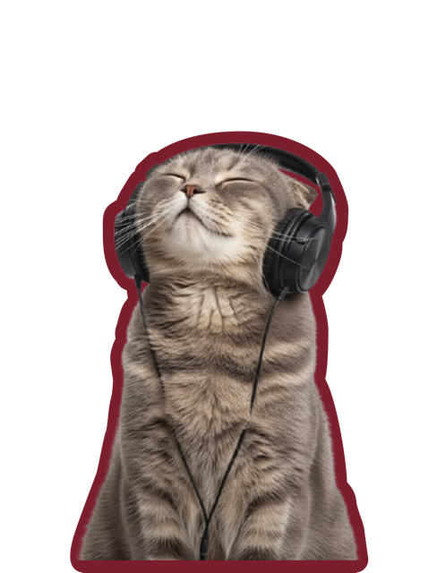
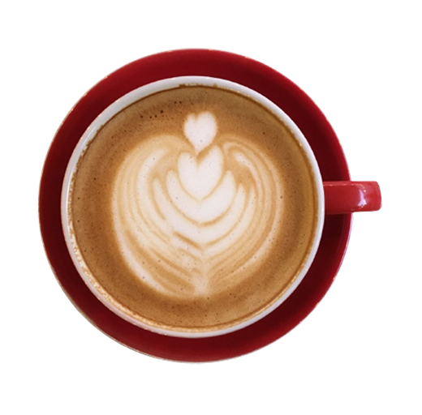
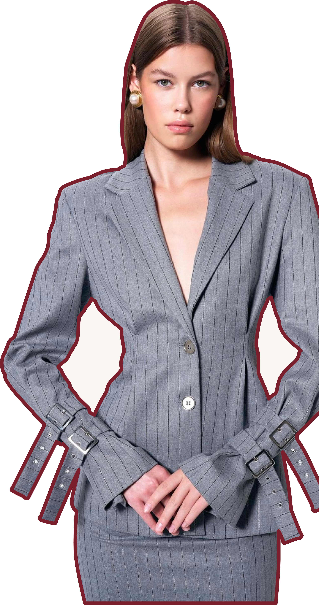

Варіант 1 — Framed poster (бордова рамка, як opening-пост)
Структуровані програми для іспитів, дітей і дорослих з прозорим стартом через пробне заняття.
Learn · Speak · Grow
Fluyo schoolonline english school
Варіант 2 — Typographic poster (без фото, великий лок-ап)


Варіант 3 — Harlequin split (текст ліворуч, полароїд на ромбах)
Структуровані програми для іспитів, дітей і дорослих з прозорим стартом через пробне заняття.
You look like my new student
Варіант 4 — Magazine cover (скрипт перекриває фото, masthead-рядок)
LearnSpeakGrow
Структуровані програми для іспитів, дітей і дорослих з прозорим стартом через пробне заняття.

Варіант 5 — Stamp card (фото-марка, список сигналів)